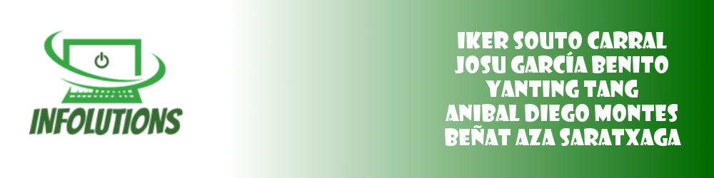

Nuestra empresa fue fundada en el año en el 2016, con el proposito de dar servicios informaticos al area de Somorrostro y alrededores. Ahora mismo contamos con 5 profesionales dedicados integramente a la informatica
Nuestros profesionales son:
Nuestros servicios van desde la reparación y venta de ordenadores, la reutilizacion de componentes para nuevos equipos hasta la creación de software a medida para empresas y particulares
